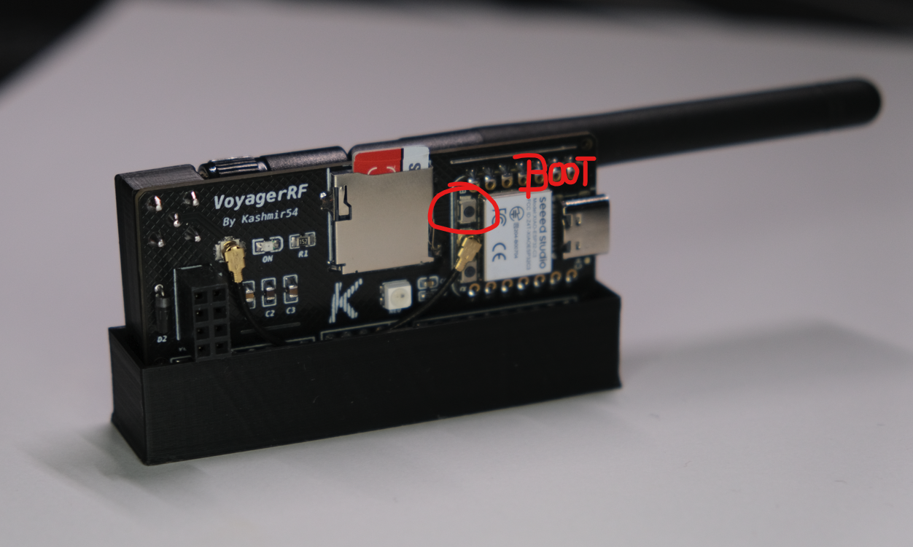

Welcome to VoyagerRF web flasher! This tool was created to smooth the flashing process of the ESP32C3 based boards for the Flipper. Currently, I'm preparing the builds for two firmwares, Marauder and Ghost_ESP. Bear in mind that these firmwares are community developed, so there might be bugs. Be patience as awesome people are working on them. Choose the different firmwate to install on your VoyagerRFv2 board or the VoyagerRF Micro. Also, read the changelog from JustCallMeKoko's ESP32Marauder and Spooks4576's Ghost_ESP to see what's new in the firmware. Updates for other boards and functionalities do not apply to the VoyagerRFs for obvious reasons, only WiFi, BLE, LED and GPS functionalities are available.
Remember to use the latest version of the apps in the Flipper, as new releases come with changes that might require it.
Your browser does not support the Web Serial API. Try Google Chrome browser in your PC instead.
ESP32Marauder
A suite of WiFi/Bluetooth offensive and defensive tools for the ESP32. By JustCallMeKoko!! 🔫
Find out the latest .fap Flipper application file at GitHub's repo.
Latest release. Checkout changelog for release v1.0.0
Ghost ESP is a ESP32 Firmware that Revolutionizes the way we use ESP32 devices in a Pen Testing aspect. By Spooks4576!! 👻
Find out the latest .fap Flipper application file at GitHub's repo.
Latest release. Checkout changelog for release VA1.3.5
Old releases:
NOTES: Perform the update with the board disconnected from the Flipper. Optionally, remove the MicroSD card from the VoyagerRF. Make sure to close anything using your device's COM port (e.g. Serial monitor), i.e. close another webflashers connected to the board.
DISCLAIMER: These firmwares and information is solely for educational purposes and not an intended use of the device. It provides a hands-on experience in the field of cybersecurity and penetration testing. Any illegal use is strictly prohibited. Test on your own environment and with your own gear.
Instructions
Step 1. Open the website and connect the board holding the ESP32C3 BOOT button (the one on the top with the "B" letter):
Boot button (press, hold, and connect while holding the button, then, release):

Step 2. Select the version you want to flash and select the "USB JTAG/serial debug unit". The COM number can be different, so don't worry about that.
Step 4. Hit next, doesn't matter if you erase the device, MicroSD card data will remain.
Step 5. Hit "Install" to perform the update.
Step 6. Wait for the process to finish. If successful, the following message will be displayed:
Now you can check the version in the reboot option in the ESP32 WiFi Marauder app in your Flipper!
The USBC Serial option is for test/flash your board/Xiao-ESP32C3 using the ESP web console. This USBC Serial will stop the GPIO pins transmission and it will only work via USBC with the PC. You can always go back to the non USBC Serial version of the firmware.